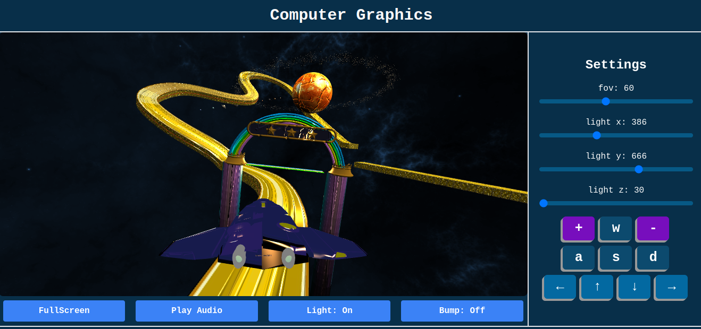

Introduzione
Questo progetto è stato sviluppato per l'esame di "Computer Graphics A.A. 2023/2024". L'obiettivo è di
progettare ed implementare un'applicazione 3D interattiva usando WebGL (HTML5, CSS e contesto webgl), linguaggio
JavaScript e OpenGL.
La scena è stata sviluppata con l'obiettivo di realizzare una navicella in grado di muoversi in tutte le
direzioni tra i pianeti e una pista.
Tutti gli oggetti sono stata implementati usando Blender e poi importati in formato
.obj
Interfaccia
L'interfaccia dell'applicazione è composta da due parti, il canvas per la visualizzazione 3D e una colonna con i
comandi per l'utente, in cui sono disegnati dei pulsanti per muoversi nello spazio.

I movimenti nella scena possono essere gestiti attraverso la tastiera o i bottoni presenti.
- W per andare avanti
- S per andare indietro
- A per andare a sinistra
- D per andare a destra
- + per aumentare la velocita'
- - per abbassare la velocita'
- ↑ per muoversi verso l'alto
- ↓ per muoversi verso il basso
- ← per ruotare verso sinistra
- → per ruotare verso destra
Struttura del progetto
All'interno della repository sono presenti i seguenti file:
- doc: è la repository contenente la documentazione del progetto.
- project : è la repository che contiene i file utilizzati per la realizzazione del
progetto ed è strutturata nel seguente modo:
- libs: contiene le diverse librerie utilizzate
- assets: è organizzata in sottocartelle contenenti i file dei modelli mesh
realizzati. In ogni sottocartella è presente il file .obj che rappresenta la geometria
dell'oggetto e il file .mtl che contiene le informazioni delle texture e dei materiali
applicati all'oggetto.
- utils: è una cartella che contiene la gestione degli eventi utilizzati per la
realizzazione del progetto.
- index.css: è il foglio di stile utilizzato per la realizzazione
dell'interfaccia grafica.
- index.html: è il file principale del progetto, che contiene la struttura HTML e
il collegamento a tutti i file javascript e fogli di stile.
- index.js: è il file principale nel quale viene gestito il canvas 3D e caricati i
modelli mesh.
Utility - directory utils
La directory
utils contiene i file utilizzati per la gestione degli eventi.
I file che lo compongono sono:
- audio.js: si occupa di attivare e disattivare l'audio.
- fullscreen.js: gestisce la modalita' fullscreen.
- handleButton.js: gestisce i bottoni interattivi.
- light.js: gestisce le luci.
- shadow.js: gestisce le ombre.
Index - file index.js
Riferimenti
WebGL Fundamentals: Loading .obj
with Mtl
WebGL Fundamentals: Shadows
Torna all’indice